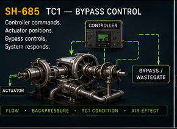

01 · Engineered to Endure
Trinity's integrated water, power, and thermal design vision.
Explore Film 01Explore Trinity Continuum films, engineering visualizations, project concepts and archived source collections. Visual material is illustrative unless identified as verified installation evidence.
Explore the Trinity Continuum four-film presentation program, with visual context and written discussion points for every chapter. Earlier silent or voice-unverified motion cuts are kept in the controlled source archive, not offered as individual public film links.
Trinity's integrated water, power, and thermal design vision.
Explore Film 01Original film title retained; depicts the six integrated utility-core trailers, while the current Texas configuration adds BFS and data-center trailers for eight total.
Explore Film 02Water treatment, safeguards, and quality assurance concepts.
Explore Film 03Manufacturing, transport, site deployment, and lifecycle service.
Explore Film 04Presentation imagery illustrates proposed applications, not verified installations or system certification. Refer to the engineering packages for the equipment geometry and qualification status.
Our four narrated films illustrate Trinity Continuum's proposed integrated utility platform. Begin with a short introduction explaining how to interpret the conceptual imagery, repeated scenes and engineering illustrations.
Explore all four films and their introductionThese four-trailer, 12-million-gallon-per-year and 6-inch-piping records are historical and are not the current Texas configuration or current production baseline. The current Texas configuration has eight trailers (six utility-core, BFS and data center). Its earlier visual and drawing records are grouped separately in the catalog for source applicability review. They retain their original filenames; their inclusion does not establish that an older drawing matches the reopened configuration.
The six-trailer utility-core documentation and Mumbai two-53-foot-trailer handoff retain their separate configurations and engineering records. The current Texas eight-trailer system requires its own configuration-level reconciliation.
Recovered engineering anchors: the original four-trailer handoff register, manufacturing Gold Master index and physical configuration record. These records carry their original 1-MW labeling and release status; historical applicability is tracked separately; these are not current configuration or performance claims.
Browse four-trailer source records in the catalogSearch the existing image labels, scene numbers and subjects. Original filenames and revision labels are preserved. Inspected images also have readable titles; matched film scenes carry their ledger subjects and chapter-source links. Catalog entries are searchable archive references; public illustrations open directly on Trinity's website without an account. Controlled originals remain available through professional review. Source images and titles do not establish engineering release or test acceptance.
Loading labeled image catalog…
The catalog currently includes 984 source entries. Historical four-trailer records have their own source-review category. Quarantined and explicitly superseded records remain excluded. Files whose subject cannot be established from the existing label are held for identification.

Browse approved conceptual illustrations directly on Trinity’s website without requesting Google Drive access. Original recovered contact sheets remain source-review material until specifically approved for public release.
20 source images covering the facility, site, utilities, production and drawing sheets. Original filenames are retained. These visual records remain distinct from released native CAD and signed construction drawings. View the approved conceptual illustrations through the public gallery; original source drawings remain under professional review.
Chapter clips, working assemblies, scripts and picture audits. Some long masters are stored as split archive parts and need reassembly before playback.
Watch the public film collectionVisual review cut, four contact sheets, source inventories and the media review archive.
Watch the public film collectionVisual-source records are available by management-approved request; personal Library links are not public access routes.